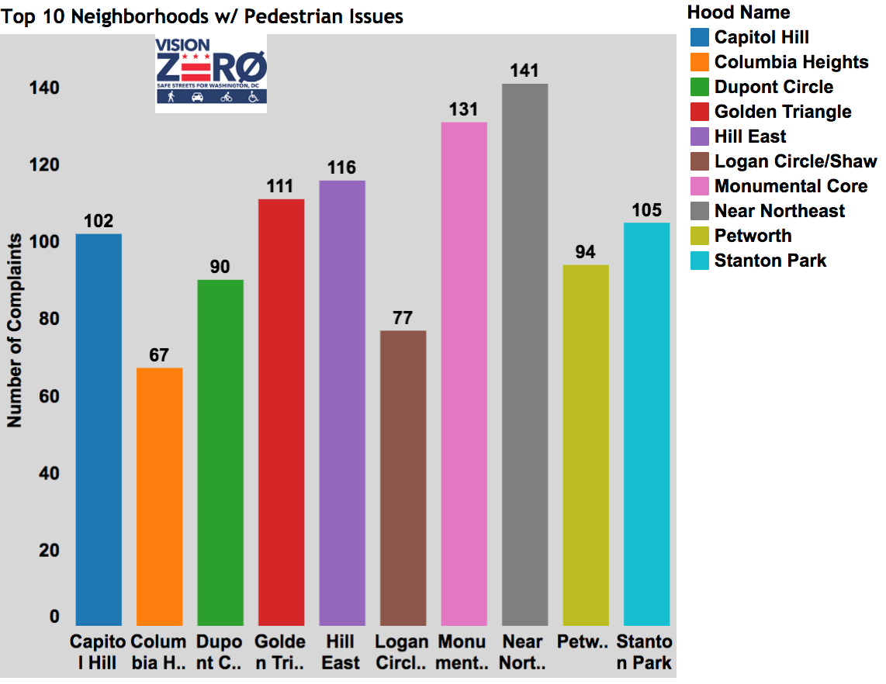

Why Visualizing Open Data Isn't Enough
Kate Rabinowitz // April 3, 2017 // originally published by D.C. Policy Center
With a new proposed Data Policy, release of high profile datasets on topics like 311 and taxicabs, and Open Government Advisory Group, the D.C. Government looks interested in moving up the ranks of open data cities. This is good news for policymakers, businesses, and citizens. But with open data comes the duty to use it responsibly.
This doesn’t always happen. A recent example is an analysis of pedestrian safety that declared that the most dangerous neighborhoods for pedestrians are largely located in and around Capitol Hill, accounting for 21 percent of pedestrian traffic complains within the top 10 neighborhoods (see below).
Capitol Hill and surrounding neighborhoods in top 10 for reported neighborhood issues, according to Vision Zero data

Source: District Ninja
The findings were based on data from the city’s Vision Zero initiative to reach zero fatalities during transit by 2020. In July 2015, D.C. released an app and website as part of the initiative allowing citizens to report pedestrian, bike, or driving safety issues. The District took a great “open by default” approach, quickly making the data publicly available on opendata.dc.gov, and actively engaging the data community.
All data is not created equal, though, and how data is created must be factored into any analysis. The pedestrian safety post highlights neighborhoods with the highest number of pedestrian-related complaints. While there is no perfect data on pedestrian safety, other data sources suggest that neighborhoods with the most complaints are almost certainly not the neighborhoods that are most dangerous for pedestrians. For instance, we know that the neighborhoods with the most pedestrian safety complaints (as shown in the map on the left below) actually tend to have higher Walk Scores than the city average. Capitol Hill is certainly more pedestrian-friendly than neighborhoods like Ivy City, which lacks sidewalks on several blocks. Finally, the map on the right shows crashes that involve pedestrians (also an imperfect measure, as it’s difficult to know the “per pedestrian” rate and is therefore sensitive to population density are very low) around Capitol Hill.
Neighborhoods where people self-report a high number of pedestrian safety issues are not always those with a high number of pedestrian-involved crashes

The difference in these two maps suggests that it is highly unlikely that the neighborhoods with the most pedestrian-related complaints are actually the most dangerous to pedestrians. What causes this discrepancy? A couple factors could be at play:
- The Vision Zero data relies on people to self-report pedestrian-related issues. There are a number of hurdles to self-reporting: In order to report an issue, the reporter must be aware of the initiative, and have the necessary technology. They must also have the time and focus to notice and report a complaint and trust their complaint will be addressed—otherwise they won’t bother. For these reasons, technology-based initiatives for citizen engagement tend to result in data that overrepresents wealthier people, offering an incomplete picture. And in fact, the Vision Zero website notes that it provides this data as a supplement to crash data, “to identify risks that would not otherwise be reflected in safety analysis” based solely on historical crash data.
- Neighborhoods that log that most pedestrian complaints will likely be neighborhoods where people walk a lot. There are more pedestrians downtown and around Capitol Hill than along the outer, more suburban, areas of D.C. Using the absolute number of complaints, as opposed to adjusting for the number of pedestrians, creates an uneven comparison across neighborhoods. (As noted earlier, this is also an issue with the pedestrian-involved crash data used in the map on the right—showing that there’s no quick fix without additional data.)
These drawbacks do not mean that self-reported data (like the Vision Zero data) is without value, but instead tells us that using the data without understanding its context can lead to false conclusions. The pedestrian safety analysis may be an extreme case, but many datasets hold similar issues to a varying degree: Crime data only has crimes that are reported, 311 complaints only capture issues raised by the people willing to complain, restaurant inspection failures happen only when restaurants are inspected, and so forth.
And this is by no means a D.C.-specific issue. Many other cities, such as New York, have a similar system for logging Vision Zero issues. San Francisco developed CycleTrack, an app now used in many cities, to allow citizens to add their biking data for use in transportation modeling. Boston’s StreetBump app to detect potholes was similarly dependent on smartphones.
In the case of the pedestrian safety data, then, what could the creators have done differently? At a minimum, the data should have been put into context with its limitations explained. A better analysis would have included additional data sources, like crash data, to provide a more balanced picture. A great analysis would have attempted to factor for pedestrian populations and considered the danger to pedestrians in neighborhoods where most residents have foregone walking. For its part, the District is using a number of different data sources to find and fix dangerous transit areas.
The increasing openness of city data is a great opportunity for citizens, researchers, journalists, and businesses, but the use of this data must come in tandem with an understanding of the inherent limitations of data. In a time of misinformation and “fake news,” the responsibility of creating responsible data analysis is one we all share. These discussions should be at the forefront of the data community. Individual users must consider the origin and context of data. Governments must do a better job of documenting and explaining their data. Only with all these parties working together can we realize the full opportunity of open data to better understand and improve our communities.
Technical notes: Vision Zero issue data and crash data were used. Both are available on DC's Open Data website. You can find complete code for this post on my github page.